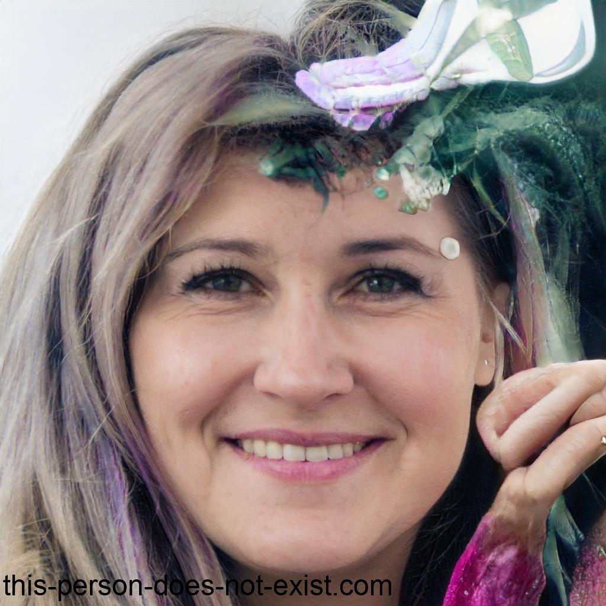

Our team
The people behind Mindful Path
Profile notice: The following counselor names, biographies, educational backgrounds, and credentials are fictional and were created only for this educational website project.
Maya Bennett
Licensed Professional Counselor
- Education
- M.A. in Clinical Mental Health Counseling, North Valley University
- Credentials
- Licensed Professional Counselor, fictional profile
- Specialties
- Anxiety support, stress management, life transitions, and self-esteem
Maya Bennett believes that counseling should provide a calm and respectful space where clients feel comfortable discussing their experiences. Her fictional practice focuses on helping adults recognize sources of stress, develop practical coping strategies, and approach major life changes with greater confidence.
Request with Maya
Daniel Kim
Licensed Marriage and Family Therapist
- Education
- M.S. in Marriage and Family Therapy, Lakeside Graduate Institute
- Credentials
- Licensed Marriage and Family Therapist, fictional profile
- Specialties
- Couples counseling, family communication, relationship conflict, and parenting concerns
Daniel Kim’s fictional counseling approach emphasizes communication, mutual understanding, and collaborative problem-solving. He works with couples and families to identify recurring patterns, discuss concerns respectfully, and develop healthier ways of responding to conflict.
Request with Daniel

Sofia Ramirez
Licensed Clinical Social Worker
- Education
- Master of Social Work, Westbridge School of Social Services
- Credentials
- Licensed Clinical Social Worker, fictional profile
- Specialties
- Depression support, grief, adjustment difficulties, and young-adult concerns
Sofia Ramirez’s fictional practice focuses on creating a supportive and nonjudgmental environment. She helps clients explore difficult emotions, recognize available sources of support, and create realistic goals that reflect their individual circumstances.
Request with Sofia
All counselor names, profiles, educational backgrounds, photos, and credentials presented on this website are fictional and were created solely for an educational project.